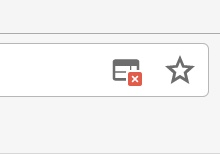
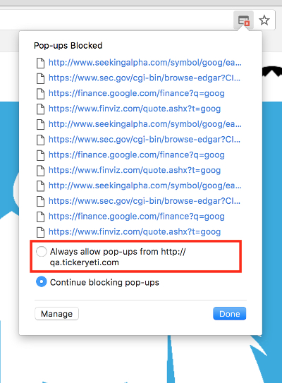
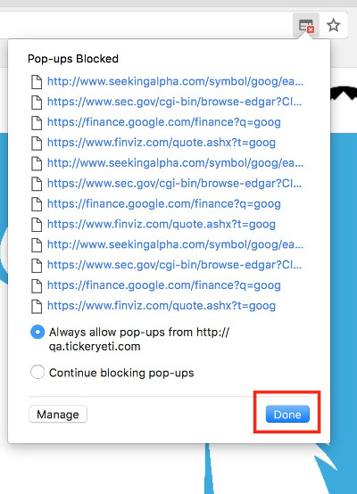

A fast stock research dashboard. Type a ticker, hit Yeti, and get price history, financials, and direct links to your favorite research sources — all in one place.
Type any US stock ticker symbol into the search box — for example AAPL, TSLA, or NVDA — then click the Yeti button (or press Enter). The full research dashboard loads below the search form.
Ticker symbols are not case-sensitive — aapl and AAPL both work.
Just below the search form, TickerYeti shows a row of chips labelled Recent. These are the last six tickers you looked up (or a set of popular defaults the first time you visit).
Click any chip to instantly reload that company's full dashboard — no need to type the ticker again. Your history is saved in your browser's local storage, so it persists between visits.
The chart shows two layers of data plotted together:
The white line traces the daily closing price over the selected time range. A shaded gradient beneath the line makes the trend easier to read at a glance.
Semi-transparent bars at the bottom of the chart show daily trading volume. Taller bars mean heavier trading activity on that day.
Hover to inspect any day. Move your cursor over the chart and a tooltip appears showing the exact date, closing price, and trading volume for that data point. A vertical crosshair line and dot mark the position on the price line.
Change the time range using the button group at the top-right of the chart card:
The label below the chart updates to show the percentage gain or loss over the currently selected range (e.g. +42.7% over 1Y).
Six stat cards appear below the chart. Hover any card to see a tooltip explaining what the metric means.
Three years of annual financial data are presented in a tabbed table. Click the tabs to switch between statements:
Each value column includes a year-over-year percentage change badge so you can spot growth or decline at a glance. Green-tinted badges indicate positive change; muted badges indicate negative change.
Three ratio cards based on the most recent fiscal year. Hover any card for a definition tooltip.
Three valuation multiples based on the most recent fiscal year. Hover any card for a definition tooltip.
A corporate summary section covering key themes from the company's most recent annual reporting period: leadership and governance, reporting structure, product strategy, and capital allocation activity. A quick narrative overview to complement the numbers above.
A set of clickable ticker chips listing companies in the same sector or competitive space. Click any peer chip to load that company's full dashboard instantly — the search box updates and the page scrolls to the new results.
If no peers are on file for a particular ticker, use the Research Avalanche (below) to explore competitive landscape data on external sources.
The Research Avalanche opens a batch of research sources in new browser tabs simultaneously, all pre-loaded with the ticker you're researching. It's the fastest way to kick off a deep-dive.
How to use it:
The four available sources are:
Browsers block multiple tabs opening at once because they treat them like pop-ups. When you click Research Avalanche, your browser may only allow the first tab to open and silently block the rest.
To fix this, allow pop-ups from tickeryeti.com. Here's how in Chrome:
Step 1 — Click the blocked pop-ups icon on the right side of the address bar.

Step 2 — Select "Always allow pop-ups from https://tickeryeti.com".

Step 3 — Click Done. Research Avalanche will now open all tabs.

On other browsers, look for a blocked pop-ups notification in the address bar and add an exception for tickeryeti.com.
Use the 🌙 toggle switch in the top-right corner of the navbar to switch between light and dark mode. TickerYeti remembers your preference — it's saved in your browser and applied automatically on your next visit with no flash of the wrong theme.
The switch track glows blue when dark mode is active.